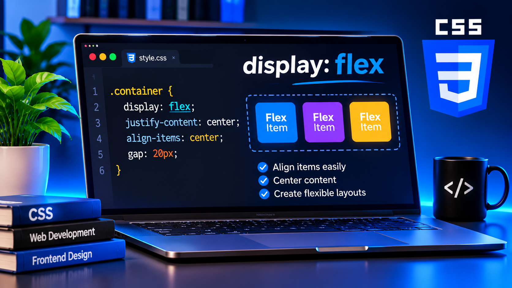

How I Built My Responsive Developer Portfolio From Scratch
A behind-the-scenes breakdown of structuring Flexbox layouts, smooth modal transitions, dark mode theming, and clean responsive breakpoints without relying on heavy CSS frameworks.